Ballista is not the only finish: Heliod also loops with Triskelion, and Soul Cauldron can turn a surviving creature into either shooter. The critical correction: an unbuffed Walking Ballista needs at least TWO counters before you start. Removing its only counter kills the 0/0 before its damage ability resolves.
How this S-tier list wins
This is a tutor-heavy stax/combo deck. Slow the table, establish protection, then assemble Heliod plus a repeatable damage ability. Triskelion is a second combo card; Cauldron is recovery for the same engine. All these loops still need Heliod. Combat is the slower fallback, not another guaranteed combo win.
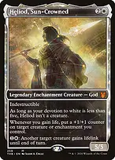
Heliod, Sun-Crowned

his lifegain trigger replaces the counter spent on each shot. He works as a noncreature enchantment below five white devotion: neither attacking nor five devotion is needed to combo. His {1}{W} ability grants lifelink to ANOTHER creature, never himself.
Finish one: Walking Ballista
+
Heliod, Sun-Crowned + Walking Ballistawith Heliod already out, cast Ballista for X=2, costing four mana. Pay {1}{W} to give it lifelink until end of turn. Remove ONE counter to deal 1 damage to an opponent; Ballista survives as a 1/1, you gain 1 life, and Heliod triggers. Target Ballista and resolve that trigger, restoring the second counter. Repeat one shot at a time until opponents lose. No tap or further mana is needed, so summoning sickness does not prevent this.
The default costs six mana with Heliod already in play: four for Ballista and two for lifelink. Casting Heliod that turn too costs nine total before taxes. Wait until turn 6 under our house rules.
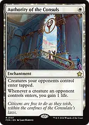
+Authority of the Consuls + Walking BallistaX=1 can work if you FIRST gain life from an opposing creature entering and put Heliod's resulting counter on Ballista. Now it has two counters. Do not fire while it still has only one: the replacement counter arrives too late to save it.
Finish two: Triskelion, without Ballista
Heliod, Sun-Crowned + Triskelioncast Triskelion for six mana; it enters with three counters on a base 1/1 body. Give it lifelink for {1}{W}. Remove one counter to deal 1 damage to an opponent, gain 1 life, and resolve Heliod's trigger putting the counter back on Triskelion. Repeat for lethal damage. Its base 1/1 survives even with no counters. Budget eight mana with Heliod already out, or eleven including Heliod, before taxes.
Triskelion
the alternative when Ballista is exiled or specifically disabled. No Ballista, sacrifice outlet, attack or death trigger is needed. It still needs Heliod, lifelink and a working activated damage ability. Keep this loop until turn 6 too.
For either shooter, opponents can respond to lifelink, damage abilities and Heliod triggers. Preventing damage, stopping your lifegain, disabling creature activations, removing Heliod or making the counter target illegal can break the loop. Clear those obstacles first; a spell restriction alone does not stop opposing abilities.
Finish three: recover a shooter's ability with Cauldron
+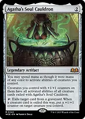
++
Heliod, Sun-Crowned + Agatha's Soul Cauldron + Walking Ballista + Grand Abolisherwith Ballista in a graveyard and Abolisher on your battlefield, tap Cauldron to exile Ballista. Its follow-up trigger puts a counter on Abolisher, granting Ballista's activated abilities. Give Abolisher lifelink with Heliod. Remove its counter to deal 1 damage; its base 2/2 survives, you gain 1 life, and Heliod replaces the counter. Repeat. The activated shot still resolves while Abolisher temporarily has no counter and loses the granted abilities; replacing the counter grants them again.
+
Agatha's Soul Cauldron + Triskelionexiling Triskelion grants the same damage ability. Use the Heliod/lifelink loop on a creature that survives spending its counter. A shooter in ANY graveyard is eligible, not just yours.
Agatha's Soul Cauldron + Serra AscendantAscendant already has lifelink. After exiling a shooter and putting the Cauldron counter here, no Heliod lifelink activation is needed. Its base 1/1 survives spending that counter even below 30 life; Heliod must still replace it after each shot.
Cauldron is a backup route, not a self-contained two-card win. It needs an exilable shooter, a suitable creature, a counter, lifelink and Heliod. The list has no built-in discard outlet to set it up on demand: use it after normal play or removal puts a shooter in a graveyard. Removing Cauldron stops the granted abilities. A 0/0 host still needs a spare counter to survive.
Without the combo: combat and incremental drain
+
Heliod, Sun-Crowned + Serra Ascendantat 30 or more life, Ascendant is a 6/6 flying lifelinker. Its combat damage gains life and gives one Heliod counter, regardless of how much life you gained. Grow the evasive attacker while stax slows the table. This can win through combat, but takes attacks rather than immediately killing everyone.
Authority of the Consulseach opposing creature entering supplies a separate lifegain event and counter. Grow an evasive attacker or prepare a one-counter Ballista. This does not generate unlimited counters on its own.

Urza's SagaConstruct tokens provide attackers whose size scales with your artifacts; Heliod counters and lifelink improve them. Their size can collapse when artifacts leave. Chapter III finds Sol Ring, Lotus Petal or Mox Opal, but CANNOT find Ballista: its printed mana cost is {X}{X}, not {0} or {1}.
Tutor for the missing piece, not always Ballista
 →
→Ranger-Captain of Eos → Walking BallistaBallista has mana value zero in the library. Captain finds it to hand, then can be sacrificed on the finishing turn to stop opposing NONCREATURE spells without spending your spell allowance. Creature spells and abilities remain available to opponents.
 →
→Recruiter of the Guard → TriskelionTriskelion's base toughness is one in the library, so Recruiter finds the Ballista-independent shooter. Recruiter also finds Ballista, or Grand Abolisher when protection is missing.
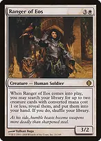
→+Ranger of Eos → Walking Ballista + Serra Ascendantget a combo piece and combat fallback together. Mother of Runes or Esper Sentinel can fill the second slot when protection or draw is more urgent.
Enlightened Tutor → Triskelionfinds either artifact shooter, but puts it on TOP rather than into your hand. Cast at an opponent's end step before your draw when the spell limit permits. Cauldron or a relevant hate enchantment can be a better target if the shooter is already available.
Scrapyard Recombiner → Triskeliononce it can tap, sacrifice an artifact to find either Construct shooter to hand. Recombiner can sacrifice itself; its modular counters can then move to a surviving artifact creature. The tutor activation uses no spell allowance.
 →
→Inventors' Fair → Walking Ballistawith three artifacts, pay {4}, tap and sacrifice Fair to find either shooter or Cauldron to hand. Fair itself is not an artifact. Its conditional upkeep lifegain can also add Heliod's second counter to an undersized Ballista.
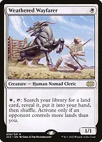
→Weathered Wayfarer → Inventors' Fairwhen an opponent has more lands, find the tutor land. This still requires Fair's artifact threshold and activation payment. Fetch Buried Ruin instead when the artifact you need is already in your graveyard.
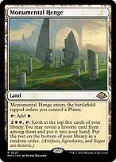
Monumental Hengeits {2}{W}{W} activation digs five cards for a historic card, including either artifact shooter. Useful selection when spells are restricted, but not a guaranteed tutor.
Buried Ruin → Triskelionpay {2}, tap and sacrifice Ruin to return a destroyed shooter or Cauldron to hand. Budget the recast and lifelink too. Ruin cannot recover a card Rest in Peace has exiled.
 →
→Karn, the Great Creator → Walking Ballista-2 can recover a FACE-UP artifact card you own in exile. Normal Commander provides no wishboard for the outside-the-game option. Taking a shooter out of Cauldron's exile removes the abilities that card was granting. Your Karn only disables opposing artifact activations.
Assemble under your own stax
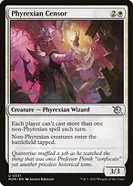
Phyrexian Censorboth shooters use your one non-Phyrexian spell for that turn. Entering tapped does not stop their damage abilities, which have no tap cost. It does delay attacks; a newly cast Recombiner cannot use its tap ability immediately anyway.

Deafening Silenceonly limits noncreature spells. Silence plus a shooter is legal under this alone, but other one-spell restrictions still apply independently.
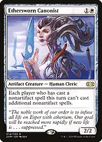
Ethersworn Canonist
artifact spells are exempt from its nonartifact restriction, allowing an artifact shooter after Silence under Canonist alone. It does not override Rule of Law.
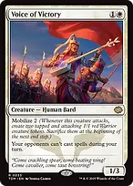
Voice of Victorystops opposing spells on your turn, but not activated or triggered abilities. Use it to protect a shooter attempt while remembering those gaps.

Silenceafter resolving, stops opposing spells for the turn, not abilities or spells already on the stack. Under a one-spell rule, use it with an existing shooter. Orim's Chant restricts just one player's spellcasting; its kicker prevents creatures from attacking that turn.
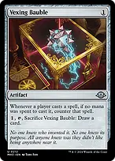
Vexing Baublecatches everyone's no-mana spells, including your free Flawless Maneuver, evoked Solitude, Lotus Petal and Mox Opal when no mana was spent casting them. Pay mana or sacrifice Bauble with its draw ability before relying on those casts. It does not counter activated damage abilities.
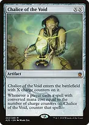
Chalice of the Void
zero catches Petal and Opal; one catches Silence, Enlightened Tutor and your one-mana removal. Ballista cast with X=2 has mana value FOUR on the stack, despite being zero in the library. Choose the Chalice setting around your actual finishing plan.
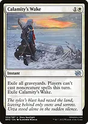
Calamity's Wakestops your noncreature casts too, and clearing graveyards removes Cauldron fuel. Creature spells remain legal under Wake alone, but casting Wake already used your spell if Rule of Law is active. Do not plan Wake followed by a shooter under that restriction.
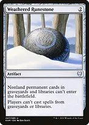
Weathered Runestonestops nonland permanent cards entering from libraries or graveyards, including Saga putting an artifact onto the battlefield. It also stops casting from those zones. Tutors to HAND and Cauldron exiling a creature to grant abilities still work. Grafdigger's Cage blocks creature cards entering from those zones; Containment Priest exiles uncast nontoken creatures. Normally casting either shooter from hand works through all three.
Protect the engine and keep progressing
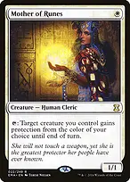
+
Mother of Runes + Giver of Runesprotect eligible creatures, not Heliod while he is only an enchantment. Giver cannot target itself. Do not give the shooter protection from white while trying to loop: Heliod's white lifelink activation and counter triggers then cannot target it.
 +
+
Generous Gift + Witch Enchanter // Witch-Blessed Meadowclear an opposing permanent that prevents creature activations, damage or lifegain before committing to a loop. Gift is broader; Enchanter supplies artifact/enchantment removal as a creature spell under Deafening Silence, or a land when development matters more.

Talon Gates of Madarapay {4} to put it from hand onto the battlefield at instant speed; its entry trigger phases out a threatened creature without using your spell allowance. Saving a shooter this way interrupts the current combo attempt. It cannot target Heliod while he is not a creature.

The One Ring
its tap ability adds a burden counter THEN draws that many cards. Its upkeep trigger loses life rather than drawing. Find a protected finish before the growing upkeep cost catches you; lifegain helps pay that cost but does not itself win.
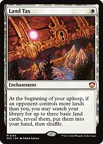
+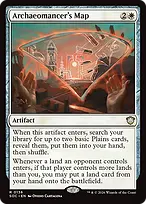
Land Tax + Archaeomancer's Mapput Plains into hand to sustain land drops. Map can additionally put a land from hand onto the battlefield when its opposing-land trigger and land-count condition allow it. Tax does not put lands directly into play.

Nykthos, Shrine to Nyxyour white stax permanents can supply devotion for expensive Triskelion turns. Count the {2} activation cost and tapping Nykthos when calculating net mana.
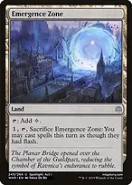
Emergence Zonepay {1}, tap and sacrifice it to cast a shooter on an opponent's end step, saving next turn's spell for Silence. It grants flash, not an exemption from spell limits; check what you already cast that turn. Give the shooter lifelink on the turn you actually start shooting.
Opening hands and the finishing turn
Keep two or three usable mana sources, cheap development and a relevant hate piece, tutor or draw engine. Expensive locks plus Triskelion without early mana is not a plan. Deploy rocks before restricting yourself to one spell a turn when possible, and choose hate for the opposing engines you actually face.
Before turn 6, develop mana, slow opponents, attack with evasive creatures, establish draw and find a shooter or protection. Heliod need not be the turn-three play if a relevant hatebear or draw engine is more urgent. Keep two-card infinite finishes until turn 6 onward under our house rules.
With Heliod and Abolisher established, a clean Ballista turn is: cast Ballista for X=2 with four mana, pay {1}{W} for lifelink, then alternate ONE damage activation and ONE resolved Heliod counter trigger until lethal. Triskelion instead needs six plus two. If the shooter is already out, use your spell on Silence before lifelink. Under Rule of Law, never schedule a protection spell and a newly cast shooter on the same turn.
After removal, choose Triskelion, Buried Ruin, Karn or Cauldron according to where the missing card went and which hate pieces remain. If Heliod is unavailable, none of the counter-replacement loops works: rebuild the commander or pivot to finite combat rather than claiming Cauldron is an independent win.